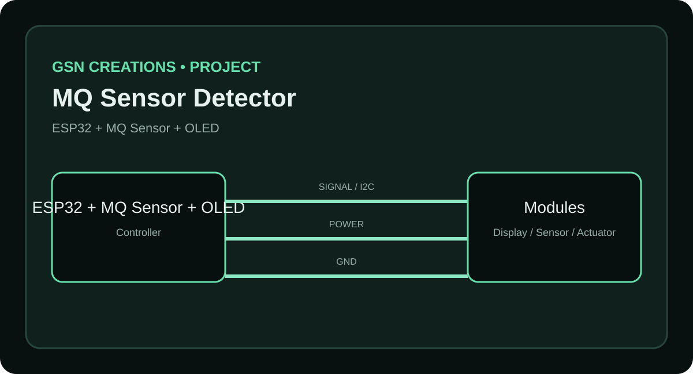
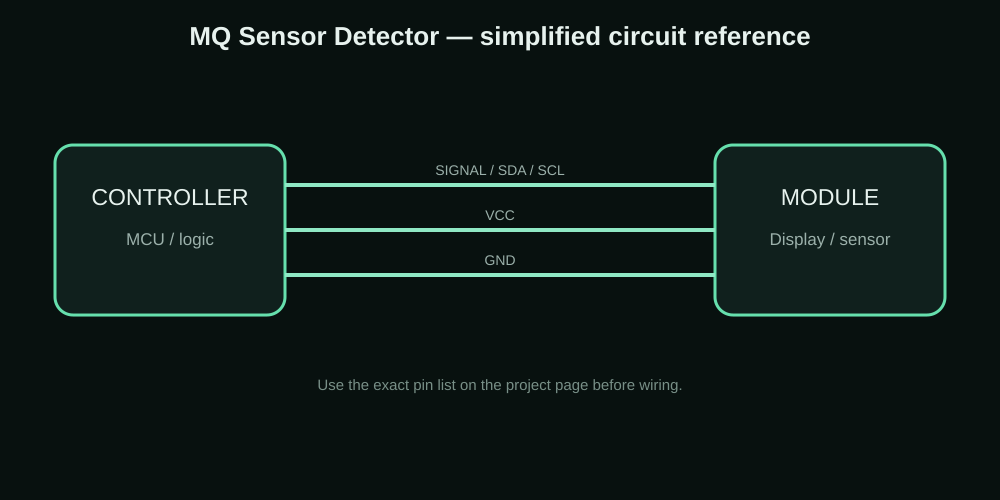

ESP32 • MQ SENSOR • OLED
MQ Sensor Detector with OLED
A sensor-monitoring prototype that displays the detector status and simple animations on a 0.96-inch SSD1306 OLED.
MY PROJECT / REFERENCE IMAGE

CONNECTION / CIRCUIT REFERENCE

WHY I MADE IT
The idea behind the project
I use the OLED to make sensor projects more understandable. Instead of only printing a number in the Serial Monitor, the display can show a clear status and animation while the sensor is being tested.
This page is written as a build record: the goal is to explain what the project is, how the parts are connected, what to test and where the design can be improved.
Components I used
| Component | Purpose |
|---|---|
| ESP32 | Main controller |
| MQ-series sensor module | Gas/sensor input |
| 0.96-inch SSD1306 OLED | Status display |
| Buzzer or indicator | Optional alert output |
| Breadboard + jumper wires | Prototype wiring |
Connections
| Connection | Details |
|---|---|
| OLED | Connect to the ESP32 I2C pins used by the sketch |
| MQ sensor VCC/GND | Use the module's rated supply and common ground |
| MQ sensor output | Connect to the ESP32 input selected by the sketch |
| Alert output | Connect to the selected GPIO if used |
How I built and tested it
- Power the sensor and allow it to stabilize.
- Read the sensor output in the ESP32 loop.
- Convert the reading into the simple status used by the project.
- Update the OLED with the current value/status.
- Trigger the optional alert when the configured condition is reached.
Problems, limits and things to check
MQ sensors need warm-up time and their readings depend strongly on the module, environment and calibration. The displayed value should therefore be treated as a project reading, not as a certified measurement without proper calibration.
What this project can teach you
- Gas/sensor experiments
- ESP32 monitoring projects
- OLED dashboards
- Learning analog/digital sensor handling
Downloads
The project ZIP keeps the available project resources together. For a new build, check the code, wiring and board pinout before uploading.
Download Project ZIPAdvertisement